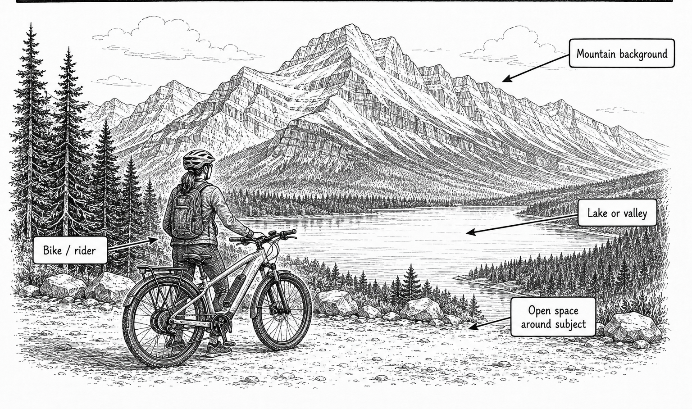

Start here
Av | Aperture f/5.6 | ISO Auto
How to take it
- Take this at a normal tour stop; do not stop riding just for the photograph.
- Put one bike, or David with his bike, low in the frame with mountains or lake behind.
- Leave enough space around the bike so scenery remains important.
- Put the AF point on David, or on a crisp bike-frame edge for a bike-only photo.
- Take one horizontal and one vertical frame while everyone is already stopped.
Focus this shot
Place it: Put the AF point on David's face or nearest eye; for a bike-only shot use a crisp bike-frame or handlebar edge.
Look for: David or the bike should look sharp while mountains remain recognizable behind it.
If this happens
| Bike is blurry | Move the AF point onto David or the bike and refocus. |
|---|---|
| David is dark | Try +1/3 exposure compensation. |
| Bike fills the frame | Step back or frame wider so scenery is part of the picture. |
| Riders enter frame | Take several frames while people move naturally; do not delay group. |
Tips
- Photograph the bike slightly from the side so frame and wheels read clearly.
- A rider looking toward scenery can make a stronger travel-story image.